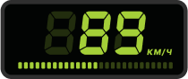

Шинный калькулятор
С помощью шинного калькулятора вы легко можете посчитать, как изменятся: внешние размеры колеса, высота дорожного просвета (клиренс), показания спидометра и другие характеристики, при установке шин с другим типоразмером на ваш автомобиль. Все размеры шин калькулятор рассчитывает в миллиметрах, а скорость автомобиля в км/ч. Также калькулятор поможет рассчитать необходимую ширину диска для определенного размера шины
Старый размер:
Старый размер:
Размеры
- Ширина шины, мм
- Высота профиля, мм
- Внутренний диаметр, мм
- Внешний диаметр, мм
Старый (мм)
- 195
- 127
- 381
- 635
Новый (мм)
- 205
- 113
- 406
- 632
Сравнение (разница в мм)
- +10
- -14
- +25
- -3
Спидометр
Показания спидометра
- Показания спидометра (км/ч)
- Реальная скорость (км/ч)
- Разницы (км/ч)
Реальная скорость
- 90
- 89.6
- -0.43
Клиренс
Изменение клиренса, мм –1.5
1. Установка нестандартных типоразмеров может привести к ухудшению характеристик автомобиля и разрушению самой шины!
2. Диски меньшего диаметра, чем те, что установлены сейчас, могут не подойти к вашему авто, поскольку тормозная система (суппорт) может упираться во внутреннюю часть диска.
Подобрать для вас шины с типоразмером 205/55 R16?
Найдено в каталоге
При пересчёте размеров шин на калькуляторе, следует учитывать, что:
При увеличении диаметра колёсного диска, (и, как следствие, уменьшение высоты профиля шины, чтобы внешний диаметр колеса оставался без изменений) увеличивается нагрузка на подвеску автомобиля, а так же ухудшается комфорт (машина станет заметно жёстче).
При чрезмерном увеличении профиля шины машина становится «валкой», хуже управляется и при критических значениях высоты профиля шина может начать цепляться за детали кузова и подвески автомобиля, что в последствии приведет к ее разрушению.
Погрешность в показаниях спидометра зависит от скорости автомобиля, при увеличении скорости погрешность увеличивается. Кроме того нужно учитывать, что погрешность влияет на показания расхода топлива автомобиля
Таблица похожих типоразмеров шин
Для удобства подбора и сравнения типоразмеров колес, мы предлагаем вам таблицу наиболее близких по Внешнему диаметру (D) автошин +/- 10 мм, которые есть в нашем каталоге Везём Колёса. Установка колес с разницей внешнего диаметра больше 10 мм не рекомендуется, кроме случаев, когда именно этот типоразмер указан в инструкции по эксплуатации для вашей машины. Калькулятор рассчитывает таблицу относительно первоначально заданного размера шины — Старый размер — 195/65 R15.